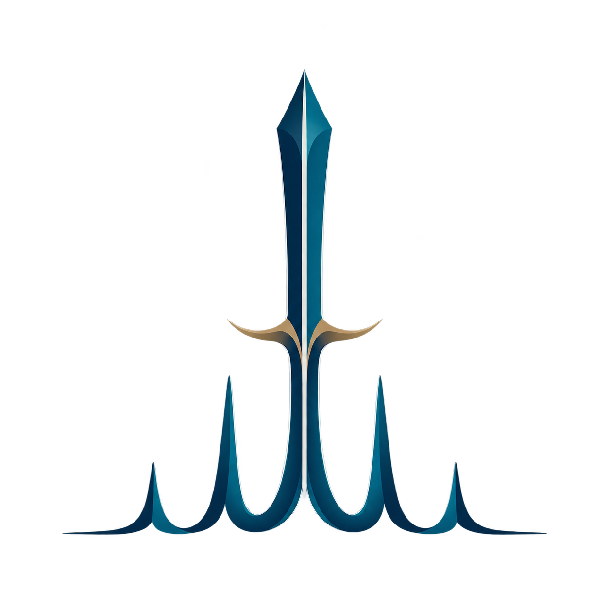

统一数据，先看清问题
解析 .xy、.xrdml、.raw、.csv 等格式，检查元数据、噪声、背景、Kα₂ 与仪器域差异。

GAN JIANG面向粉末 X 射线衍射
干将（Gan Jiang agent) 是一名面向 PXRD 的人工智能分析科学家。它把复杂图谱转化为可验证的结构结论，并从专家反馈中持续演化，服务下一代高通量材料发现。
了解它能做什么 ↓高通量实验可以更快地产生样品；干将让表征判断跟上材料发现的速度。
探索晶体分析场景
每一种结构，都需要一条不同的证据路径。
悬停不同晶体，探索它对应的 XRD 分析任务
为什么叫“干将”
“干将”是中国古代铸剑文化中的名字。材料发现同样是一场漫长的淬炼：并非只追求制造更多样品，而是要在复杂的证据中分辨结构、剔除误判，并把每一次验证锻造成下一次更可靠的判断。
干将希望成为研究者与未来机器人实验室之间，那位持续学习、谨慎求证的人工智能分析科学家。
它是什么
合成、计算和机器人实验室能够快速产生大量候选样品，但 PXRD 表征仍常依赖专家逐张分析。物相识别、多相分解、结构精修、微结构参数提取与异常判断被不同软件和经验割裂，已成为材料发现的关键瓶颈。干将将它们统一为可审阅、可复用的自主分析过程。
它服务于研究者的判断，不取代研究者的判断。
它能做什么
解析 .xy、.xrdml、.raw、.csv 等格式，检查元数据、噪声、背景、Kα₂ 与仪器域差异。
判断单相或多相、晶相或非晶、已知结构或未知结构，以及单张还是原位时间序列。
联合结构数据库、理论谱、XQueryer 与 XMatcher 输出候选；以 XDecomposer 和 Rietveld 精修共同验证。
根据残差与物理合理性，在 PyWPEM、GSAS-II、FullProf 等引擎间动态选择并调整参数。
记录失败原因、专家修正与后续验证，把可靠经验沉淀为技能，并指导下一轮实验条件。
下载和体验
干将平台目前处于 Beta 测试阶段，现面向本群成员免费开放体验。体验资格仅限本群成员；欢迎邀请有相关需求的老师和同学加入本群。
扫描右侧二维码，加入用户群并获取体验信息。
为什么是它
干将关心的不只是数字是否更好看，也关心结论是否合理、是否经得起复查、能否帮助你决定下一步。每一次经过确认的分析与专家反馈，都会成为它继续演化的基础。
每个建议都应能回到图谱、模型或实验条件。
重要结论用互补的方法交叉检查，而非依赖单一指标。
可确认的经验被整理为可复用的分析能力，服务下一次研究。
面向未来实验室
干将连接机器人实验室、计算筛选与 XRD 表征：回答目标相是否形成、杂相从何而来、是否需要补测，以及下一轮应调整哪些测试参数。
它不会把未经验证的经验直接写进系统；只有被证据、专家与后续实验共同确认的策略，才会成为可版本化、可评估、可回滚的分析技能。
下载和体验 ↓